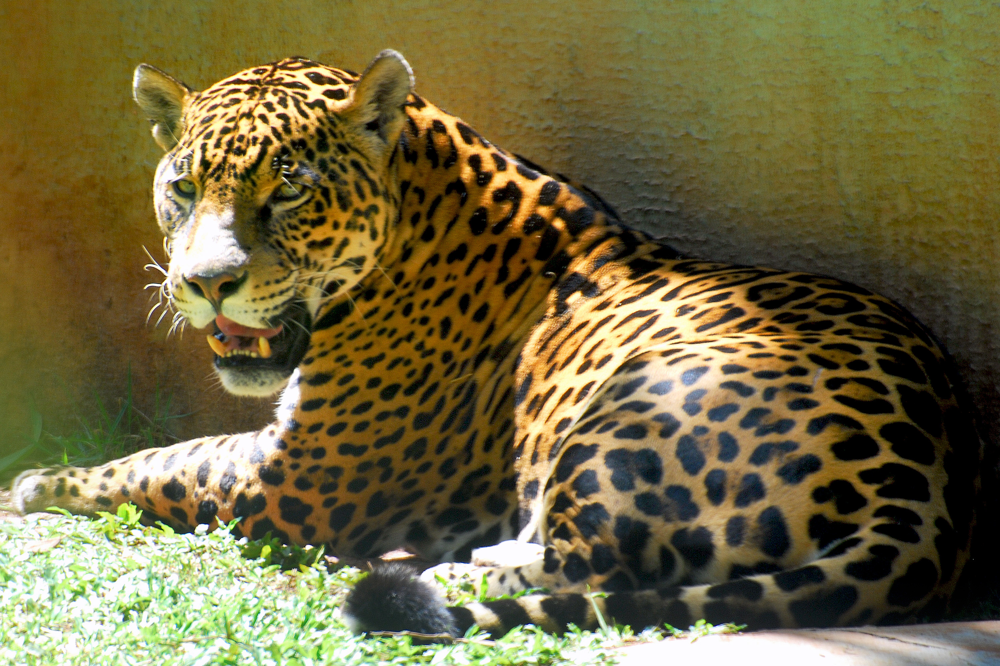
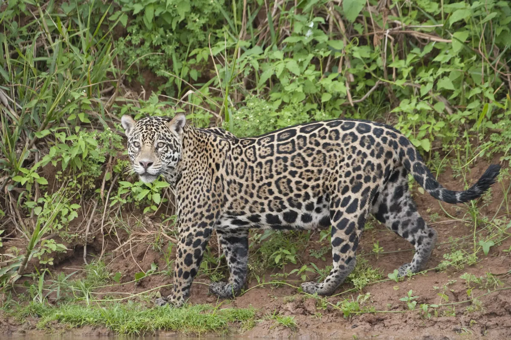

Ягуар (Panthera onca) является символом мощи и таинственности в экосистемах Южной Америки. Это крупнейшая кошка на американском континенте и третья по величине в мире, уступающая только тигру и льву. Обладая уникальной красотой и невероятной силой, ягуар играет ключевую роль в поддержании баланса экосистем своего обитания.
Ягуар отличается мощным телосложением, широкими плечами и мускулистой грудью. Средний вес самца колеблется от 56 до 96 кг, а длина тела достигает 1,8 метра, не считая хвоста. Характерной особенностью ягуара является его пятнистый рисунок на шерсти, напоминающий розетки. Эти пятна помогают ягуару сливаться с окружающей средой, обеспечивая отличную маскировку.
Ягуары обитают в разнообразных экосистемах, включая дождевые леса Амазонки, тропические леса Центральной Америки, а также болота и саванны. Основные ареалы их обитания находятся в Бразилии, Венесуэле, Колумбии, Перу и Боливии. Предпочитая влажные и густые леса, ягуары часто встречаются вблизи водоемов, так как они превосходные пловцы.

Ягуар является высшим хищником и играет важную роль в регулировании численности популяций других животных. Его рацион разнообразен и включает более 85 видов добычи, таких как капибары, олени, обезьяны, птицы и даже кайманы. Сильные челюсти и мощные зубы позволяют ягуару прокусывать черепа своих жертв, что делает его уникальным среди больших кошек.
Ягуары ведут одиночный образ жизни и встречаются с другими представителями своего вида только для спаривания. Они территориальны и активно защищают свои охотничьи угодья от вторжения других ягуаров. Период беременности у самок составляет около 100 дней, после чего на свет появляются от одного до четырех детенышей. Мать заботится о потомстве в течение первых двух лет жизни, обучая его охоте и выживанию.
Несмотря на свою силу и приспособленность, ягуары находятся под угрозой. Основные угрозы для их популяции включают разрушение среды обитания из-за вырубки лесов, браконьерство и конфликты с человеком. Международный союз охраны природы (МСОП) классифицирует ягуара как вид, находящийся в уязвимом положении. Для сохранения этого величественного хищника необходимо продолжать усилия по защите его среды обитания, внедрять программы по охране природы и повышать осведомленность общественности о важности сохранения биоразнообразия.